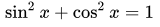

वराह मिहिर
वराहमिहिर (वरःमिहिर) ईसा की पाँचवीं-छठी शताब्दी के भारतीय गणितज्ञ एवं खगोलज्ञ थे। वाराहमिहिर ने ही अपने पंचसिद्धान्तिका में सबसे पहले बताया कि अयनांशका मान 50.32 सेकेण्ड के बराबर है। कापित्थक (उज्जैन) में उनके द्वारा विकसित गणितीय विज्ञान का गुरुकुल सात सौ वर्षों तक अद्वितीय रहा। वरःमिहिर बचपन से ही अत्यन्त मेधावी और तेजस्वी थे। अपने पिता आदित्यदास से परम्परागत गणित एवं ज्योतिष सीखकर इन क्षेत्रों में व्यापक शोध कार्य किया। समय मापक घट यन्त्र, इन्द्रप्रस्थ में लौहस्तम्भ के निर्माण और ईरान के शहंशाह नौशेरवाँ के आमन्त्रण पर जुन्दीशापुर नामक स्थान पर वेधशाला की स्थापना - उनके कार्यों की एक झलक देते हैं। वरःमिहिर का मुख्य उद्देश्य गणित एवं विज्ञान को जनहित से जोड़ना था। वस्तुतः ऋग्वेद काल से ही भारत की यह परम्परा रही है। वरःमिहिर ने पूर्णतः इसका परिपालन किया है।
जीवनी
वराहमिहिर का जन्म सन् 499 में एक ब्राह्मण परिवार में हुआ। यह परिवार उज्जैन के निकट कपित्थ(कायथा) नामक गांव का निवासी था। उनके पिता आदित्यदास सूर्य भगवान के भक्त थे। उन्हीं ने मिहिर को ज्योतिष विद्या सिखाई। कुसुमपुर (पटना) जाने पर युवा मिहिर महान खगोलज्ञ और गणितज्ञ आर्यभट्ट से मिले। इससे उसे इतनी प्रेरणा मिली कि उसने ज्योतिष विद्या और खगोल ज्ञान को ही अपने जीवन का ध्येय बना लिया। उस समय उज्जैन विद्या का केंद्र था। गुप्त शासन के अन्तर्गत वहां पर कला, विज्ञान और संस्कृति के अनेक केंद्र पनप रहे थे। मिहिर इस शहर में रहने के लिये आ गये क्योंकि अन्य स्थानों के विद्वान भी यहां एकत्र होते रहते थे। समय आने पर उनके ज्योतिष ज्ञान का पता विक्रमादित्य चन्द्रगुप्त द्वितीय को लगा। राजा ने उन्हें अपने दरबार के नवरत्नों में शामिल कर लिया। मिहिर ने सुदूर देशों की यात्रा की, यहां तक कि वह यूनान तक भी गये। सन् 578 में वराहमिहिर की मृत्यु हो गई।
कृतियाँ
550 ई. के लगभग इन्होंने तीन महत्वपूर्ण पुस्तकें बृहज्जातक, बृहत्संहिता और पंचसिद्धांतिका, लिखीं। इन पुस्तकों में त्रिकोणमिति के महत्वपूर्ण सूत्र दिए हुए हैं, जो वराहमिहिर के त्रिकोणमिति ज्ञान के परिचायक हैं। पंचसिद्धांतिका में वराहमिहिर से पूर्व प्रचलित पाँच सिद्धांतों का वर्णन है। ये सिद्धांत हैं : पोलिशसिद्धांत, रोमकसिद्धांत, वसिष्ठसिद्धांत, सूर्यसिद्धांत तथा पितामहसिद्धांत। वराहमिहिर ने इन पूर्वप्रचलित सिद्धांतों की महत्वपूर्ण बातें लिखकर अपनी ओर से 'बीज' नामक संस्कार का भी निर्देश किया है, जिससे इन सिद्धांतों द्वारा परिगणित ग्रह दृश्य हो सकें। इन्होंने फलित ज्योतिष के लघुजातक, बृहज्जातक तथा बृहत्संहिता नामक तीन ग्रंथ भी लिखे हैं। बृहत्संहिता में वास्तुविद्या, भवन-निर्माण-कला, वायुमंडलकी प्रकृति, वृक्षायुर्वेद आदि विषय सम्मिलित हैं।
अपनी पुस्तक के बारे में वराहमिहिर कहते है: ज्योतिष विद्या एक अथाह सागर है और हर कोई इसे आसानी से पार नहीं कर सकता। मेरी पुस्तक एक सुरक्षित नाव है, जो इसे पढ़ेगा वह उसे पार ले जायेगी। यह कोरी शेखी नहीं थी। इस पुस्तक को अब भी ग्रन्थरत्न समझा जाता है।
- कृतियों की सूची
- पंचसिद्धान्तिका,
- बृहज्जातकम्,
- लघुजातक,
- बृहत्संहिता
- टिकनिकयात्रा
- बृहद्यात्रा या महायात्रा
- योगयात्रा या स्वल्पयात्रा
- वृहत् विवाहपटल
- लघु विवाहपटल
- कुतूहलमंजरी
- दैवज्ञवल्लभ
- लग्नवाराहि
वैज्ञानिक विचार तथा योगदान
बराहमिहिर वेदों के ज्ञाता थे मगर वह अलौकिक में आंखे बंद करके विश्वास नहीं करते थे। उनकी भावना और मनोवृत्ति एक वैज्ञानिक की थी। अपने पूर्ववर्ती वैज्ञानिक आर्यभट्ट की तरह उन्होंने भी कहा कि पृथ्वी गोल है। विज्ञान के इतिहास में वह प्रथम व्यक्ति थे जिन्होंने कहा कि कोई शक्ति ऐसी है जो चीजों को जमीन के साथ चिपकाये रखती है। आज इसी शक्ति को गुरुत्वाकर्षण कहते है। लेकिन उन्होंने एक बड़ी गलती भी की। उन्हें विश्वास था कि पृथ्वी गतिमान नहीं है। अगर यह घूम रही होती तो पक्षी पृथ्वी की गति की विपरीत दिशा में (पश्चिम की ओर) कर अपने घोसले में उसी समय वापस पहुंच जाते।
वराहमिहिर ने पर्यावरण विज्ञान (इकालोजी), जल विज्ञान (हाइड्रोलोजी), भूविज्ञान (जिआलोजी) के संबंध में कुछ महत्वपूर्ण टिप्पणियां की। उनका कहना था कि पौधे और दीमक जमीन के नीचे के पानी को इंगित करते हैं। आज वैज्ञानिक जगत द्वारा उस पर ध्यान दिया जा रहा है। उन्होंने लिखा भी बहुत था। संस्कृत व्याकरण में दक्षता और छंद पर अधिकार के कारण उन्होंने स्वयं को एक अनोखी शैली में व्यक्त किया था। अपने विशद ज्ञान और सरस प्रस्तुति के कारण उन्होंने खगोल जैसे शुष्क विषयों को भी रोचक बना दिया है जिससे उन्हें बहुत ख्याति मिली। उनकी पुस्तक पंचसिद्धान्तिका (पांच सिद्धांत), बृहत्संहिता, बृहज्जात्क (ज्योतिष) ने उन्हें फलित ज्योतिष में वही स्थान दिलाया है जो राजनीति दर्शन में कौटिल्य का, व्याकरण में पाणिनि का और विधान में मनु का है।
त्रिकोणमिति
निम्ननिखित त्रिकोणमितीय सूत्र वाराहमिहिर ने प्रतिपादित किये हैं-।
- 


वाराहमिहिर ने आर्यभट्ट प्रथम द्वारा प्रतिपादित ज्या सारणी को और अधिक परिशुद्धत बनाया।
अंकगणित
वराहमिहिर ने शून्य एवं ऋणात्मक संख्याओं के बीजगणितीय गुणों को परिभाषित किया।
संख्या सिद्धान्त
वराहमिहिर 'संख्या-सिद्धान्त' नामक एक गणित ग्रन्थ के भी रचयिता हैं जिसके बारे में बहुत कम ज्ञात है। इस ग्रन्थ के बारे में पूरी जानकारी नहीं है क्योंकि इसका एक छोटा अंश ही प्राप्त हो पाया है। प्राप्त ग्रन्थ के बारे में पुराविदों का कथन है कि इसमें उन्नत अंकगणित, त्रिकोणमिति के साथ-साथ कुछ अपेक्षाकृत सरल संकल्पनाओं का भी समावेश है।
क्रमचय-संचय
वराहमिहिर ने वर्तमान समय में पास्कल त्रिकोण (Pascal's triangle) के नाम से प्रसिद्ध संख्याओं की खोज की। इनका उपयोग वे द्विपद गुणाकों (binomial coefficients) की गणना के लिये करते थे।
प्रकाशिकी
वराहमिहिर का प्रकाशिकी में भी योगदान है। उन्होने कहा है कि परावर्तन कणों के प्रति-प्रकीर्णन (back-scattering) से होता है। उन्होने अपवर्तन की भी व्याख्या की है।